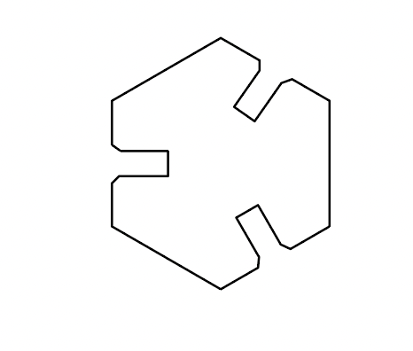
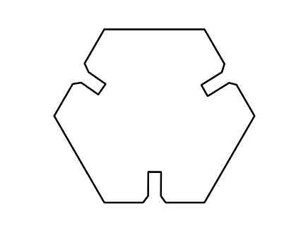
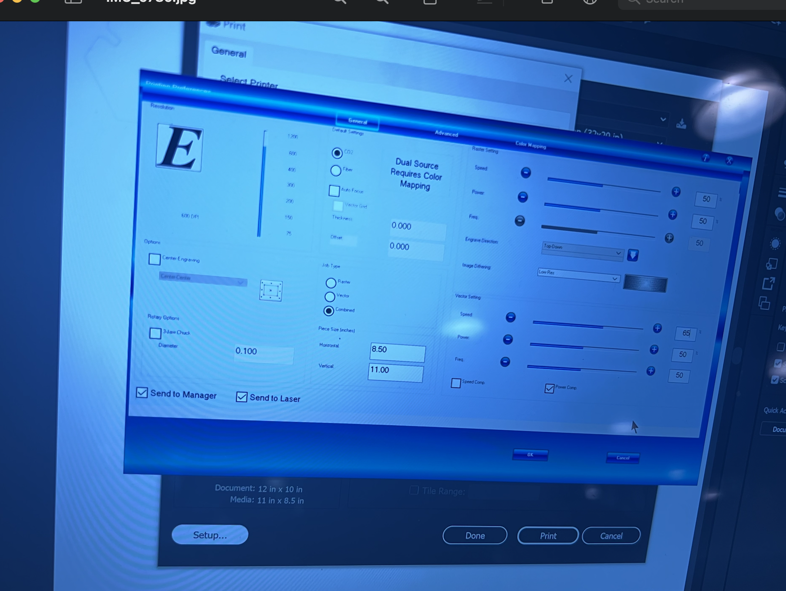
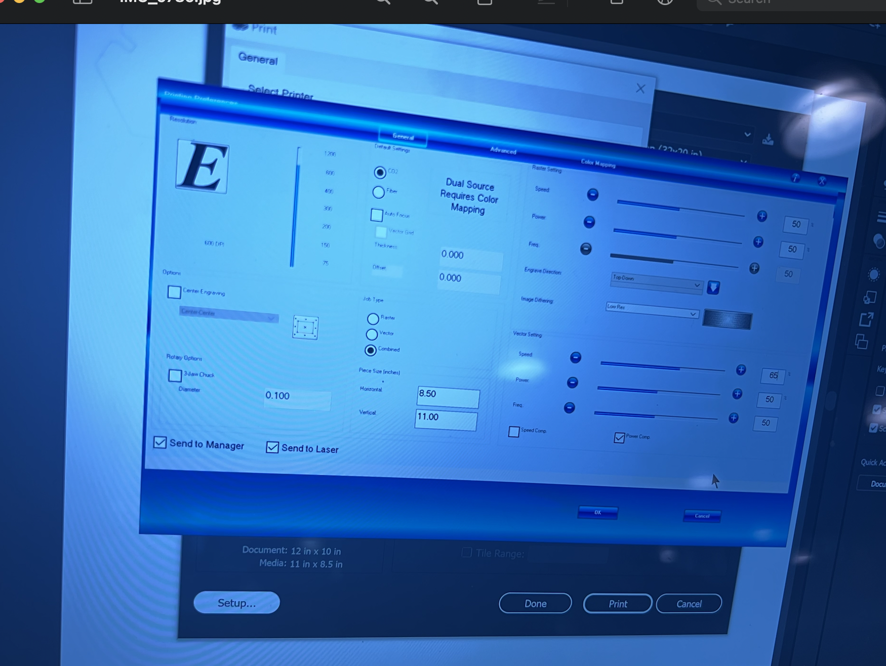
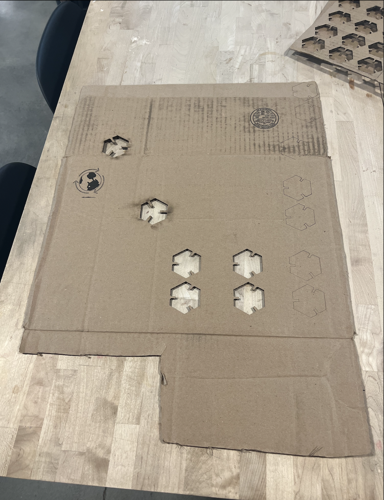
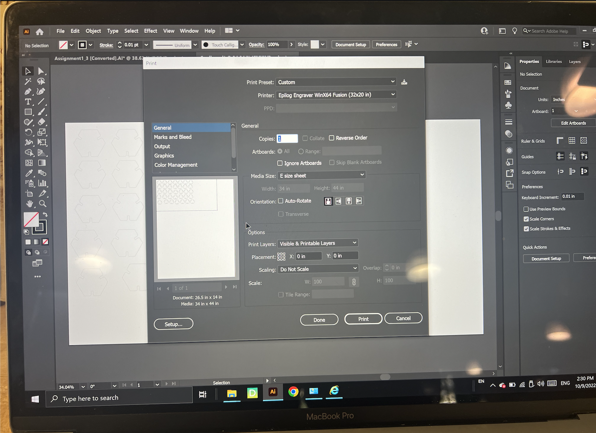
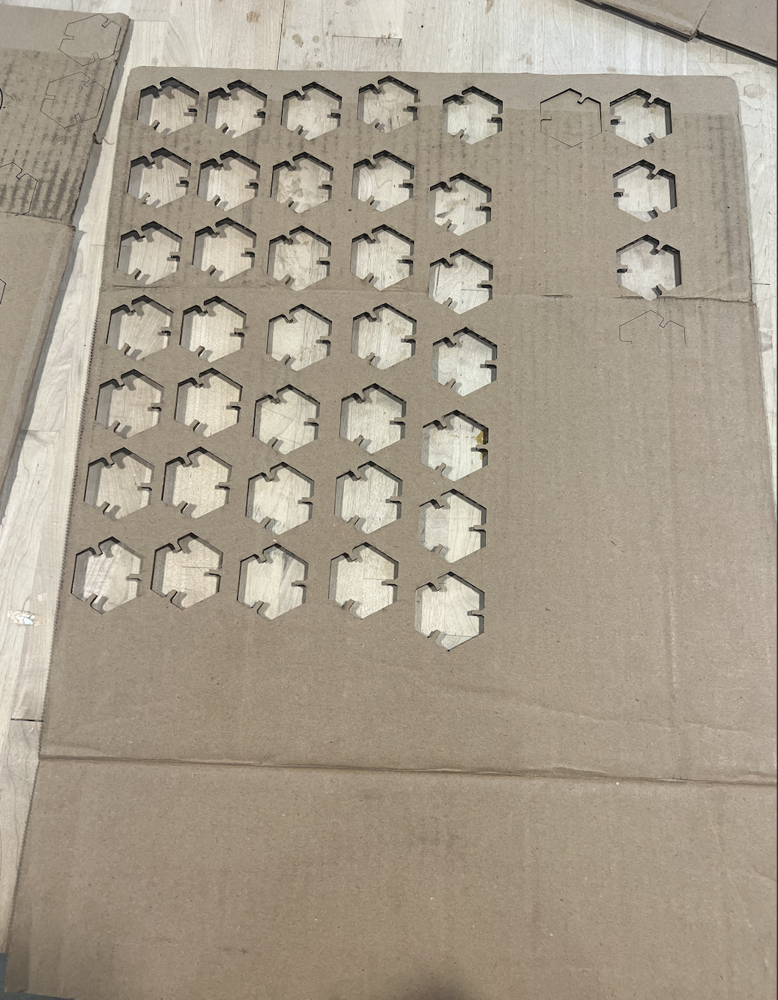

When first thinking of building a kit of shapes that fit together, I was instantly reminded of my time back in organic chemistry class. We drew many hexagons and played with 3D models of molecules. So, I thought a hexagon shape would be perfect for this assignment to look similar to organic structures. Initially, I created a structure with deep slots, 5mm wide with cambered edges. My cardboard thickness ranged from 4.8-5mm, so I thought that with would be appropriate. Then, I learned from Jessica after her trial run of cutting that exactly the width doesn't ensure a tight fit. So, I reduced my slot width to 4mm and exported to illustrator to scale (another thing I learned from Jessica!). Here was my initial curve (see Assignment1_2Dtrial.AI): 
I went to the 8 during office hours to learn how to use their laser cutter. With TA Junchao's advice, I used matboard cutting settings with a thickness of 1/8 of an inch. However, upon putting the two pieces together, they immediately fell apart! This was likely due to tolerance on the cutter and vairance in the carboard. Also, my slots were too deep because I did not account for shape overlap in my initial design, which would make the parts collide when there were 3 or more parts. To fix this, I changed my design to halve the slot depth and reduce the slot width by 20% to ~3.2mm. Here was my new curve (see Assignment1finalcurve.AI): 
Sadly, before I could test the new design, the laser cutter at the 8 had broken down! So, I decided to return to the Mill the next day to complete the assignment,
But, the Mill has a completely different laser cutting machine! So, I had to do multiple test cuts (with the help of the Mill staff) to figure out what would work for my material.
 I started off with an initial setting of speed: 65, power: 50, frequency: 50

I started off with an initial setting of speed: 65, power: 50, frequency: 50

I went through various trials of speed to ensure it could cut all the way through and pop out of cardboard. 
I finally settled on the setting of speed: 25, power: 50, frequency: 50

The new design worked and did not fall apart when put together, so now I just needed to then print 30 pieces! (see Cardboard.ai) I needed to ensure the artboard was similar dimensions to my cardboard in Illustrator so I can place the pieces correctly. I also needed to ensure the media and document size were large enough to match my artboard, so that it will print all the pieces.  Here was the final cut results:  This kit can be used to assemble any organic shape you'd like, like hexagonal legos :)! My results: